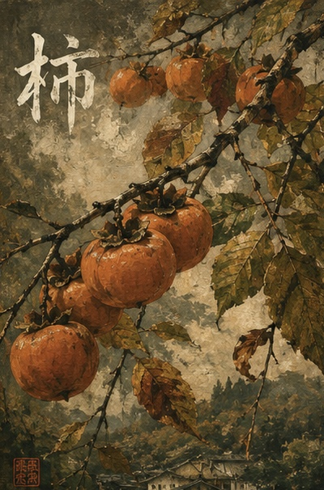
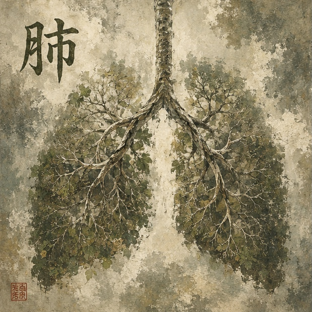

💡 Tip: Click the colored kanji to view stroke order animations

夕雨の中で灯りが揺れていた。
道が光へ変わる場所に声が集まった。
Lanterns swayed beneath the evening rain.
Voices gathered where roads became light.

秋は静かに枝へ実っていた。
寒さの中にも甘さが残っていた。
Autumn rested quietly on the branch.
Even the cold carried sweetness.

姉は褒められずとも前を歩いた。
幼い者たちはその影を追って帰った。
She walked ahead without needing praise.
The younger ones followed her shadow home.

冬の空気は静かな硝子のように入ってきた。
吐く息だけが空に姿を見せた。
Winter air entered like silent glass.
Breath became visible beneath the sky.

その帯は布だけを結んでいたのではない。
記憶までも腰に巻かれていた。
The cloth held more than fabric together.
Memory was wrapped around the waist.

雨水は壊れた石道に留まっていた。
動きは行き先を忘れてしまった。
Rainwater lingered in broken stone paths.
Movement forgot where it once belonged.

枝は静かに自らを守っていた。
美しさと痛みは同じ茎に宿っていた。
The branch protected itself in silence.
Beauty and pain shared the same stem.

職人は切る前に静かに測った。
秩序が意志に形を与えた。
The craftsman measured before he cut.
Order gave shape to intention.

工房の灯りの下で手が働いていた。
作られた物には忍耐の跡が残っていた。
Hands worked beneath warm workshop lanterns.
Creation carried the fingerprints of patience.
車輪は泥と季節の中を回り続けた。
進むものはまた戻ってくる。
The wheel turned through mud and season.
What moved forward also returned.
墨は古い紙の上にゆっくり広がった。
小さな動きの中に心が現れた。
Ink spread slowly across worn paper.
The heart revealed itself through small gestures.

屋根は銀色の霧に消えていった。
大地は黙って雨を受けていた。
The rooftops disappeared into silver mist.
Earth listened without complaint.

山々は流れる白い息に隠れていった。
空は漂うことを覚えた。
Mountains vanished behind drifting white breath.
The sky learned to wander.
日は暗くなっても闇にはならなかった。
静けさが村を均等に覆っていた。
The day dimmed without becoming dark.
Silence covered the village evenly.

光は突然地平を裂いた。
山々さえその声に応えた。
Light split the horizon without warning.
Even the mountains answered back.
朝は白い模様を静かに残していた。
冬が畑にその名を書いた。
Morning settled in fragile white patterns.
Winter signed its name upon the field.

木々は空の手を掲げて立っていた。
静けさそのものが力になっていた。
The trees stood with empty hands.
Stillness became its own kind of strength.
嵐の上では光がなお開かれていた。
空は何一つ求めなかった。
Above the storm, the light remained open.
The sky asked for nothing in return.

遠い歌声が霧の森を漂っていた。
人は知らぬ間に道へ引き込まれる。
A distant song drifted through the forest mist.
Some paths are entered without permission.

雨は黒い土の奥へ染み込んでいった。
春になると大地はすべてを思い出した。
Rain disappeared into the dark soil below.
By spring, the earth remembered everything.